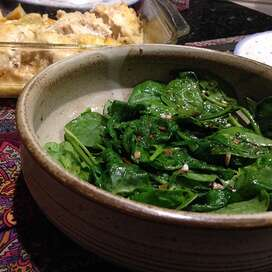

Recipes
Wilted Spinach

Ingredients
- ¼ cup extra virgin olive oil
- 2 tablespoons balsamic vinegar
- 1 teaspoon lemon juice
- 1 tablespoon bottled minced garlic
- 1 pinch sea salt
- 1 pinch ground black pepper
- 4 ounces baby spinach
- 1 ½ tablespoons pine nuts
Steps
-
In a bowl, mix the olive oil, vinegar, lemon juice, garlic, salt, and
pepper.
-
Place the spinach over boiling water in a pot fitted with a steamer
basket, and steam 2 to 3 minutes, until wilted but not soggy.
-
Toss spinach in a bowl with the dressing, and sprinkle with pine nuts to
serve.